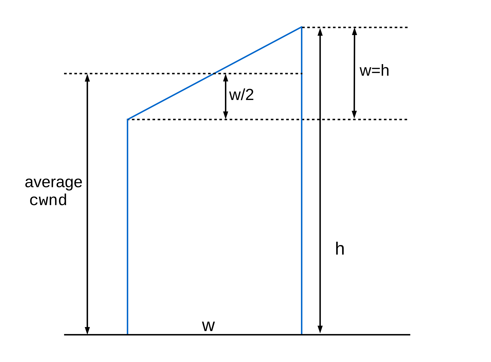
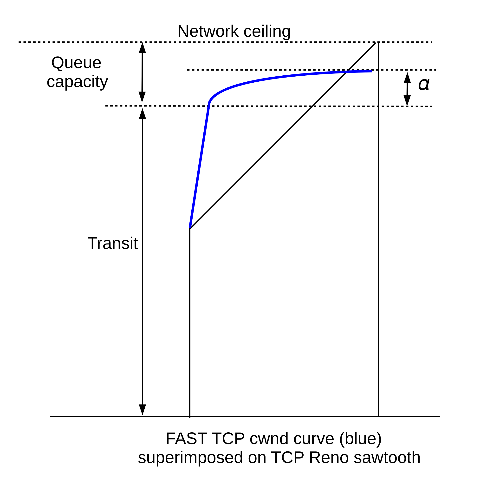
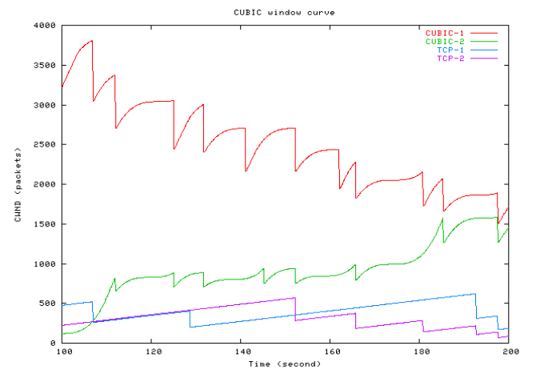
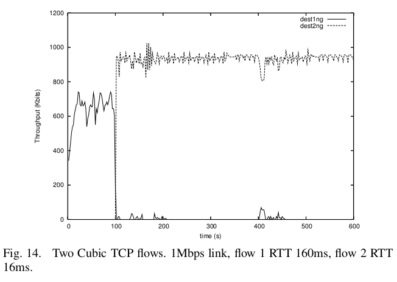
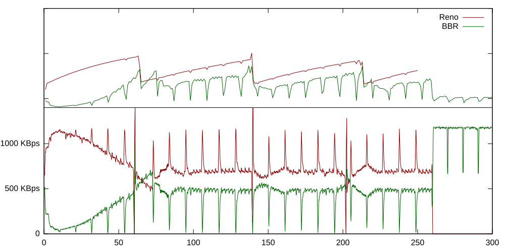

22 Newer TCP Implementations¶
Since the rise of TCP Reno, several TCP alternatives to Reno have been developed; each attempts to address some perceived shortcoming of Reno. While many of them are very specific attempts to address the high-bandwidth problem we considered in 21.6 The High-Bandwidth TCP Problem, some focus primarily or entirely on other TCP Reno foibles. One such issue is TCP Reno’s “greediness” in terms of queue utilization; another is the lossy-link problem (21.7 The Lossy-Link TCP Problem) experienced by, say, Wi-Fi users.
Generally speaking, a TCP implementation can respond to congestion at the cliff – that is, it can respond to packet losses – or can respond to congestion at the knee – that is, it can detect the increase in RTT associated with the filling of the queue. These strategies are sometimes referred to as loss-based and delay-based, respectively; the latter term because of the rise in RTT. TCP implementers can tweak both the loss response – the multiplicative decrease of TCP Reno – and also the way TCP increases its cwnd in the absence of loss. There is a rich variety of options available.
The concept of monitoring the RTT to avoid congestion at the knee was first introduced in TCP Vegas (22.6 TCP Vegas). One striking feature of TCP Vegas is that, in the absence of competition, the queue may never fill, and thus there may not be any congestive losses. The TCP sawtooth, in other words, is not inevitable.
When losses do occur, most of the mechanisms reviewed here continue to use the TCP NewReno recovery strategy. As most of the implementations here are relatively recent, the senders can generally expect that the receiving end will support SACK TCP, which allows more rapid recovery from multiple losses.
22.1 Choosing a TCP on Linux¶
On Linux systems, the TCP congestion-control mechanism can be set by writing an appropriate string to /proc/sys/net/ipv4/tcp_congestion_control (or, equivalently, by passing the string as a parameter to the sysctl net.ipv4.tcp_congestion_control command). The standard options on the author’s system as of 2013 are listed below (as of 2016, several are now only available if loaded explicitly, eg with modprobe). The list comes from /proc/sys/net/ipv4/tcp_available_congestion_control.
- highspeed
- htcp
- hybla
- illinois
- vegas
- veno
- westwood
- bic
- cubic
We review several of these below; see 22.4 A Roadmap for an overview. TCP Cubic is currently (2013) the default Linux congestion-control implementation; TCP Bic was a precursor.
The TCP congestion-control mechanism can also be set on a per-connection basis. Non-root users can select any mechanism listed in /proc/sys/net/ipv4/tcp_allowed_congestion_control; entries in tcp_available_congestion_control can be copied to this by the root user.
Many TCP flavors are not available by default, but can be loaded via modprobe. The modules containing the TCP implementations are generally in /lib/modules/$(uname -r)/kernel/net/ipv4. Executing ls tcp_* in this directory yields (on the author’s system in 2017) the following:
- tcp_bic.ko
- tcp_cdg.ko
- tcp_dctcp.kp
- tcp_highspeed.ko
- tcp_htcp.ko
- tcp_hybla.ko
- tcp_illinois.ko
- tcp_scalable.ko
- tcp_vegas.ko
- tcp_veno.ko
- tcp_westwood.ko
- tcp_yeah.ko
To load, eg, TCP Vegas, use modprobe tcp_vegas (without the “.ko”). This will last until the next reboot (or until the module is manually unloaded). At this point /proc/sys/net/ipv4/tcp_available_congestion_control will contain “vegas” (not tcp_vegas).
In the C language, we can select the Linux congestion control mechanism, after socket creation but before connection, by including the setsockopt() call below; see 28.2.2 An Actual Stack-Overflow Example and 29.5.3 A TLS Programming Example for complete C examples (though without this call).
#include <netinet/in.h>
#include <netinet/tcp.h>
...
char * cong_algorithm = "vegas";
int slen = strlen( cong_algorithm ) + 1;
int rc = setsockopt( sock, IPPROTO_TCP, TCP_CONGESTION, cong_algorithm, slen);
if (rc < 0) { /* error */ }
Checking the return code is essential to determine if the algorithm request succeeded.
In Python3 (and Python2) we can do this as well; the file below is also available at tcp_stalkc_cong.py. See also 30.7.3.1 sender.py.
#!/usr/bin/python3
# stalk client allowing specification of the TCP congestion algorithm
from socket import *
from sys import argv
default_host = "localhost"
portnum = 5431
cong_algorithm = 'vegas'
def talk():
global cong_algorithm
rhost = default_host
if len(argv) > 1:
rhost = argv[1]
if len(argv) > 2:
cong_algorithm = argv[2]
print("Looking up address of " + rhost + "...", end="")
try:
dest = gethostbyname(rhost)
except gaierror as mesg: # host not found
errno,errstr=mesg.args
print("\n ", errstr);
return;
print("got it: " + dest)
addr=(dest, portnum)
s = socket()
TCP_CONGESTION = 13 # defined in /usr/include/netinet/tcp.h
cong = bytes(cong_algorithm, 'ascii')
try:
s.setsockopt(IPPROTO_TCP, TCP_CONGESTION, cong)
except OSError as mesg:
errno, errstr = mesg.args
print ('congestion mechanism {} not available: {}'.format(cong_algorithm, errstr))
return
res=s.connect_ex(addr) # make the actual connection
if res!=0:
print("connect to port ", portnum, " failed")
exit()
while True:
try:
buf = input("> ")
except:
break;
buf = buf + "\n"
s.send(bytes(buf, 'ascii'))
talk()
As of version 3.5, Python did not define the constant TCP_CONGESTION; the value 13 above was found in the C include file mentioned in the comment. Fortunately, Python simply passes the parameters of s.setsockopt() to the underlying C call, and everything works. Supposedly TCP_CONGESTION is pre-defined in Python 3.6.
22.2 High-Bandwidth Desiderata¶
One goal of all TCP implementations that attempt to fix the high-bandwidth problem is to be unfair to TCP Reno: the whole point is to allow cwnd to increase more aggressively than is permitted by Reno. Beyond that, let us review what else a TCP version should do.
First is the backwards-compatibility constraint: any new TCP should exhibit reasonable fairness with TCP Reno at lower bandwidth×delay products. In particular, it should not ever have a significantly lower cwnd than a competing TCP Reno would get. But also it should not take bandwidth unfairly from a TCP Reno connection: the above comment about unfairness to Reno notwithstanding, the new TCP, when competing with TCP Reno, should leave the Reno connection with about the same bandwidth it would have if it were competing with another Reno connection. This is possible because at higher bandwidth×delay products TCP Reno does not efficiently use the available bandwidth; the new TCP should to the extent possible restrict itself to consuming this previously unavailable bandwidth rather than eating significantly into the bandwidth of a competing TCP Reno connection.
There is also the self-fairness issue: multiple connections using the new TCP should receive similar bandwidth allocations, at least with similar RTTs. For dissimilar RTTs, the bandwidth proportions should ideally be no worse than they would be under TCP Reno.
Ideally, we also want relatively rapid convergence to fairness; fairness is something of a hollow promise if only connections transferring more than a gigabyte will benefit from it. For TCP Reno, two connections halve the difference in their respective cwnds at each shared loss event; as we saw in 21.4.1 AIMD and Convergence to Fairness, slower convergence is possible.
It is harder to hope for fairness between competing new implementations. However, at the very least, if new implementations tcp1 and tcp2 are competing, then neither should get less than TCP Reno would get.
Some new TCPs make use of careful RTT measurements, and, as we shall see below, such measurements are subject to a considerable degree of noise. Any new TCP implementation should be reasonably robust in the face of inaccuracies in RTT measurement; a modest or transient measurement error should not make the protocol behave badly, in either the direction of low cwnd or of high.
Finally, a new TCP should ideally try to avoid clusters of multiple losses at each loss event. Such multiple losses, for example, are a problem for TCP NewReno without SACK: as we have seen, it takes one RTT to retransmit each lost packet. Even with SACK, multiple losses complicate recovery. Yet if a new TCP increments cwnd by an amount N>1 after each RTT, then there is potential for the network ceiling to be exceeded by N within one RTT, making a cluster of N losses reasonably likely to occur. These losses are likely distributed among all connections, not just the new-TCP one.
All TCPs addressing the high-bandwidth issue will need a cwnd-increment N that is fairly large, at least some of the time, apparently conflicting with this no-multiple-losses ideal. One trick is to reduce N when packet loss appears to be imminent. TCP Illinois and TCP Cubic do have mechanisms in place to reduce multiple losses.
22.3 RTTs¶
The exact performance of some of the faster TCPs we consider – for that matter, the exact performance of TCP Reno – is influenced by the RTT. This may affect individual TCP performance and also competition between different TCPs. For reference, here are a few typical RTTs from Chicago to various other places:
- US West Coast: 50-100 ms
- Europe: 100-150 ms
- Southeast Asia: 100-200 ms
22.4 A Roadmap¶
We start with Highspeed TCP, an early and relatively simple attempt to address the high-bandwidth-TCP problem.
After that is the group TCP Vegas, FAST TCP, TCP Westwood, TCP Illinois and Compound TCP. These all involve so-called delay-based congestion control, in which the sender carefully monitors the RTT for the minute increases that signal queuing. TCP Vegas, which dates from 1995, is the earliest TCP here and in fact predates widespread recognition of the high-bandwidth-TCP problem. Its goal – then and now – was to prove that one could build a TCP that, in the absence of competition, could transfer arbitrarily long streams of data with no losses and with 100% bottleneck-link utilization.
The next group, consisting of TCP Veno, TCP Hybla and DCTCP, represent special-purpose TCPs. While TCP Veno may be a reasonable high-bandwidth TCP candidate, its primary goal is to improve TCP performance over lossy links such as Wi-Fi. TCP Hybla is targeted at satellite-Internet users with very long RTTs while DCTCP is for internal connections within a datacenter (which, among other things, have very short RTTs).
The last triad represents newer, non-delay-based attempts to solve the high-bandwidth-TCP problem: H-TCP, TCP Cubic and TCP BBR. TCP Cubic has become the default TCP on Linux.
22.5 Highspeed TCP¶
An early proposed fix for the high-bandwidth-TCP problem is HighSpeed TCP, documented in RFC 3649 (Floyd, 2003). Highspeed TCP is sometimes called HS-TCP, but we use the longer name here to avoid confusion with the entirely unrelated H-TCP, below.
Highspeed TCP adjusts the additive-increase and multiplicative-decrease parameters 𝛼 and 𝛽 so that, for larger values of cwnd, the rate of cwnd increase between losses is much faster, and the cwnd decrease at loss events is much smaller. This allows efficient use of all the available bandwidth for large bandwidth×delay products. Correspondingly, when cwnd is in the range where TCP Reno works well, Highspeed TCP’s throughput is only modestly larger than TCP Reno’s, so the two compete relatively fairly.
The threshold for Highspeed TCP diverging from TCP Reno is a loss rate less than 10−3, which for TCP Reno occurs when cwnd = 38. Beyond that point, Highspeed TCP gradually increases 𝛼 and decreases 𝛽. The overall effect is to outperform TCP Reno by a factor N = N(cwnd) according to the table below. This N can also be interpreted as the “unfairness” of Highspeed TCP with respect to TCP Reno; fairness is arguably “close to” 1.0 until cwnd≥1000, at which point TCP Reno is likely not using the full bandwidth available due to the high-bandwidth TCP problem.
| cwnd | N(cwnd) |
|---|---|
| 1 | 1.0 |
| 10 | 1.0 |
| 100 | 1.4 |
| 1,000 | 3.6 |
| 10,000 | 9.2 |
| 100,000 | 23.0 |
An algebraic expression for N(cwnd), for N≥38, is
N(cwnd) = 0.23×cwnd0.4
At cwnd=38 this is about 1.0; for smaller cwnd we stick with N=1.
To specify the details of Highspeed TCP, we start by considering a 10 Gbps link, which was the fastest generally available at the time Highspeed TCP was developed. If the RTT is 100 ms, then the bandwidth×delay product works out to 83,000 packets. The central strategy of Highspeed TCP is to choose the desired loss rate for an average cwnd of 83,000 to be 1 packet in 107; this number was empirically determined. This is quite a bit larger than the corresponding TCP Reno loss rate of 1 packet in 5×109 (21.6 The High-Bandwidth TCP Problem); in this context, a larger congestion loss rate is better. The loss rate is the reciprocal of the tooth area; it turns out (below) that we have a great deal of latitude in choosing the tooth area by adjusting the 𝛼 and 𝛽 window-growth parameters. After determining 𝛼 and 𝛽 for cwnd = 83,000, Highspeed TCP then uses interpolation to cover cwnd values in between 38 and 83,000. (The Highspeed TCP rules do extend to larger cwnds too, but there is not necessarily an expectation that they will work well there.)
We start with the TCP Reno relationship cwnd = 1.225×p−0.5, from 21.2 TCP Reno loss rate versus cwnd (RFC 3649 uses a numerator of 1.20 in this formula.) We fit the relationship cwnd = k×p−𝛼 to the above two pairs of (cwnd,p) values, (38,10−3) and (83000,10−7). This turns out to yield
cwnd= 0.12 × p−0.835
From this we can derive the TCP Reno multiplier N(cwnd) above, by using the TCP Reno relationship cwnd = 1.2×N×p−0.5 for N synchronized connections, eliminating p and then solving for N.
The next step is to define the additive-increase and multiplicative-decrease values 𝛼 = 𝛼(cwnd) and 𝛽 = 𝛽(cwnd), thus allowing us to build an actual implementation. While 𝛼 and 𝛽 are allowed to vary with cwnd, we will assume they do so only slowly, so that for any given steady-state connection the 𝛼 values are relatively constant (the 𝛽 value is that at the maximum cwnd). This gives us a standard AIMD tooth:

When cwnd is 83,000 we want the loss rate to be 10−7, meaning that the area of the tooth, w×cwnd = w×h×(1-𝛽/2), should be 107. From this we get w = 107/83,000 = 120.5 RTTs. We also have, very generally, 𝛼w = 𝛽h, and combining this with cwnd = h×(1-𝛽/2), we get 𝛼 = 𝛽h/w = cwnd×(2𝛽/(1-𝛽/2))/w ≃ 1378×𝛽/(1-𝛽/2). RFC 3649 suggests 𝛽=0.1 at this cwnd, making 𝛼 = 73. The value of 𝛽 for values of cwnd between 38 and 83,000 is determined by logarithmic interpolation between 0.5 and 0.1; the corresponding value of 𝛼(cwnd) is then set by the formula.
The 1-in-107 loss rate – corresponding to a bit error rate of about one in 1.2×1011 – is large enough that it is at least two orders of magnitude higher than the rate of noise-induced non-congestive packet losses. On the other hand, it is small enough that the Highspeed TCP derived from it competes reasonably fairly with TCP Reno, at least with bandwidth×delay products small enough that TCP Reno alone performs reasonably well.
It may be helpful to view Highspeed TCP in terms of the cwnd graph between losses. For ordinary TCP, the graph increases linearly. For Highspeed TCP, the graph is slightly convex (lying above its tangent). This means that there is a modest increase in the rate of cwnd increase, as time goes on (up to the point of packet loss).
This might be an appropriate time to point out that in TCP Reno, the cwnd-versus-time graph between losses is actually slightly concave (lying below its tangent). We do get a strictly linear graph if we plot cwnd as a function of the count of elapsed RTTs, but the RTTs are themselves slowly increasing as a function of time once the queue starts filling up. At that point, the cwnd-versus-time graph bends slightly down. If the bottleneck queue capacity matches the total path transit capacity, the RTTs for a full queue are about double the RTTs for an empty queue.
In general, when Highspeed-TCP competes with a new TCP Reno flow it is N times as aggressive, and grabs N times the bandwidth, where N = N(cwnd) is as above. For cwnd = 83,000, the formula above yields N = 21. This may be surprising, as for this value of cwnd Highspeed TCP is AIMD(73,0.1), which is equivalent to AIMD(459,0.5) (either via the formula above or by 21.10 Exercises, exercise 2.0). We might naively suppose that AIMD(459,0.5) would out-compete TCP Reno – AIMD(1,0.5) – by a factor of 459, by the reasoning of 20.3.1 Example 2: Faster additive increase. But this is true only if losses are synchronized, which, for such lopsided differences in 𝛼, is manifestly not the case. Because Highspeed TCP uses the lion’s share of the queue, it encounters the lion’s share of loss events, and TCP Reno is able to do much better than the 𝛼 values alone would suggest.
Finally, with a little math we can compare Highspeed TCP with an AIMD-type flavor of TCP with an additive-increase rule (per RTT) of the form
cwnd+= 𝛼×cwndk
For TCP Reno, k=0, and in the example of exercises 12.0 and 13.0 of 21.10 Exercises we have k=1/2. For compatibility with Highspeed TCP, it turns out what we need is k=0.8. We will return to this in 22.10 Compound TCP, which intentionally mimics the behavior of Highspeed TCP when queue utilization is low.
22.6 TCP Vegas¶
TCP Vegas, introduced in [BP95], is the only new TCP version we consider here that dates from the previous century. The goal was not directly to address the high-bandwidth problem, but rather to improve TCP throughput generally; indeed, in 1995 the high-bandwidth problem had not yet surfaced as a practical concern. The ambitious goal of TCP Vegas is essentially to eliminate congestive losses, and to try to keep the bottleneck link 100% utilized at all times. Recall from 19.7 TCP and Bottleneck Link Utilization that, with a large queue, the average bottleneck-link utilization for TCP Reno can be as low as 75%.
TCP Vegas achieves this improvement by, like DECbit, recognizing TCP congestion at the knee, that is, at the point where the bottleneck link has become saturated and further cwnd increases simply result in RTT increases. A TCP Vegas sender alone or in competition only with other TCP Vegas connections will seldom if ever approach the “cliff” where packet losses occur.
To accomplish this, no special router cooperation – or even receiver cooperation – is necessary. Instead, the sender uses careful monitoring of the RTT to keep track of the number of “extra packets” (ie packets sitting in queues) it has injected into the network. In the absence of competition, the RTT will remain constant, equal to RTTnoLoad, until cwnd has increased to the point when the bottleneck link has become saturated and the queue begins to fill (8.3.2 RTT Calculations). By monitoring the bandwidth as well, a TCP sender can even determine the actual number of packets in the bottleneck queue, as bandwidth × (RTT − RTTnoLoad). TCP Vegas uses this information to attempt to maintain at all times a small but positive number of packets in the bottleneck queue.
This TCP Vegas strategy is now often referred to as delay-based congestion control, as opposed to TCP Reno’s loss-based congestion control. TCP Reno’s periodic losses followed by the halving of cwnd is what leads to the “TCP sawtooth”; TCP Vegas, however, has no sawtooth.
A TCP sender can readily measure its throughput. The simplest measurement is cwnd/RTT as in 8.3.2 RTT Calculations; this amounts to averaging throughput over an entire RTT. Let us denote this bandwidth estimate by BWE; for the time being we will accept BWE as accurate, though see 22.8.1 ACK Compression and Westwood+ below. TCP Vegas estimates RTTnoLoad by the minimum RTT (RTTmin) encountered during the connection. The “ideal” cwnd that just saturates the bottleneck link is BWE×RTTnoLoad. Note that BWE will be much more volatile than RTTmin; the latter will typically reach its final value early in the connection, while BWE will fluctuate up and down with congestion (which will also act on RTT, but by increasing it).
As in 8.3.2 RTT Calculations, any TCP sender can estimate queue utilization as
queue_use =cwnd− BWE×RTTnoLoad =cwnd× (1 − RTTnoLoad/RTTactual)
TCP Vegas then adjusts cwnd regularly to maintain the following:
𝛼 ≤ queue_use ≤ 𝛽
which is the same as
BWE×RTTnoLoad + 𝛼 ≤cwnd≤ BWE×RTTnoLoad + 𝛽
Typically 𝛼 = 2-3 packets and 𝛽 = 4-6 packets. We increment cwnd by 1 if cwnd falls below the lower limit (eg if BWE has increased). Similarly, we decrement cwnd by 1 if BWE drops and cwnd exceeds BWE×RTTnoLoad + 𝛽. These adjustments are conceptually done once per RTT. Typically a TCP Vegas sender would also set cwnd = cwnd/2 if a packet were actually lost, though this does not necessarily happen nearly as often as with TCP Reno.
TCP Vegas achieves its goal quite well. If one monitors the number of packets in queues, through real measurement or in simulation, the number does indeed stay between 𝛼 and 𝛽. In the absence of competition from TCP Reno, a single TCP Vegas connection will never experience congestive packet loss. This is a remarkable achievement.
The use of returning ACKs to determine BWE is subject to errors due to “ACK compression”, 22.8.1 ACK Compression and Westwood+. This is generally not a major problem with TCP Vegas, however.
22.6.1 TCP Vegas versus TCP Reno¶
Despite its striking ability to avoid congestive losses in the absence of competition, TCP Vegas encounters a potentially serious fairness problem when competing with TCP Reno, at least for the case when queue capacity exceeds or is close to the transit capacity (19.7 TCP and Bottleneck Link Utilization). TCP Vegas will try to minimize its queue use, while TCP Reno happily fills the queue. And whoever has more packets in the queue has a proportionally greater share of bandwidth.
To make this precise, suppose we have two TCP connections sharing a bottleneck router R, the first using TCP Vegas and the second using TCP Reno. Suppose further that both connections have a path transit capacity of 10 packets, and R’s queue capacity is 40 packets. If 𝛼=3 and 𝛽=5, TCP Vegas might keep an average of four packets in the queue. Unfortunately, TCP Reno then gobbles up most of the rest of the queue space, as follows. There are 40-4 = 36 spaces left in the queue after TCP Vegas takes its quota, and 10 in the TCP Reno connection’s path, for a total of 46. This represents the TCP Reno connection’s network ceiling, and is the point at which TCP Reno halves cwnd; therefore cwnd will vary from 23 to 46 with an average of about 34. Of these 34 packets, if 10 are in transit then 24 are in R’s queue. If on average R has 24 packets from the Reno connection and 4 from the Vegas connection, then the bandwidth available to these connections will also be in this same 6:1 proportion. The TCP Vegas connection will get 1/7 the bandwidth, because it occupies 1/7 the queue, and the TCP Reno connection will take the other 6/7.
To put it another way, TCP Vegas is potentially too “civil” to compete with TCP Reno.
Even worse, Reno’s aggressive queue filling will eventually force the TCP Vegas cwnd to decrease; see Exercise 4.0 below.
This Vegas-Reno fairness problem is most significant when the queue size is an appreciable fraction of the path transit capacity. During periods when the queue is empty, TCPs Vegas and Reno increase cwnd at the same rate, so when the queue size is small compared to the path capacity, TCP Vegas and TCP Reno are much closer to being fair.
In 31.5 TCP Reno versus TCP Vegas we compare TCP Vegas with TCP Reno in simulation. With a transit capacity of 220 packets and a queue capacity of 10 packets, TCPs Vegas and Reno receive almost exactly the same bandwidth.
TCP Reno’s advantage here assumes a router with a single FIFO queue. That advantage can disappear if a different queuing discipline is in effect. For example, if the bottleneck router used fair queuing (to be introduced in 23.5 Fair Queuing) on a per-connection basis, then the TCP Reno connection’s queue greediness would not be of any benefit, and both connections would get similar shares of bandwidth with the TCP Vegas connection experiencing lower delay. See 23.6.1 Fair Queuing and Bufferbloat.
Let us next consider how TCP Vegas behaves when there is an increase in RTT due to the kind of cross traffic shown in 20.2.4 Example 4: cross traffic and RTT variation and again in the diagram below. Let A–B be the TCP Vegas connection and assume that its queue-size target is 4 packets (eg 𝛼=3, 𝛽=5). We will also assume that the RTTnoLoad for the A–B path is about 5ms and the RTT for the C–D path is also low. As before, the link labels represent bandwidths in packets/ms, meaning that the round-trip A–B transit capacity is 10 packets.

Initially, in the absence of C–D traffic, the A–B connection will send at a rate of 2 packets/ms (the R2–R3 bottleneck), and maintain a queue of four packets at R2. Because the RTT transit capacity is 10 packets, this will be achieved with a window size of 10+4 = 14.
Now let the C–D traffic start up, with a winsize so as to keep about four times as many packets in R1’s queue as A, once the new steady-state is reached. If all four of the A–B connection’s “queue” packets end up now at R1 rather than R2, then C would need to contribute at least 16 packets. These 16 packets will add a delay of about 16/5 ≃ 3ms; the A–B path will see a more-or-less-fixed 3ms increase in RTT. A will also see a decrease in bandwidth due to competition; with C consuming 80% of R1’s queue, A’s share wll fall to 20% and thus its bandwidth will fall to 20% of the R1–R2 link bandwidth, that is, 1 packet/ms. Denote this new value by BWEnew. TCP Vegas will attempt to decrease cwnd so that
cwnd≃ BWEnew×RTTnoLoad + 4
A’s estimate of RTTnoLoad, as RTTmin, will not change; the RTT has gotten larger, not smaller. So we have BWEnew×RTTnoLoad ≃ 1 packet/ms × 5 ms = 5 packets; adding the 4 reserved for the queue, the new value of cwnd is now about 9, down from 14.
On the one hand, this new value of cwnd does represent 5 packets now in transit, plus 4 in R1’s queue; this is indeed the correct response. But note that this division into transit and queue packets is an average. The actual physical A–B round-trip transit capacity remains about 10 packets, meaning that if the new packets were all appropriately spaced then none of them might be in any queue.
22.7 FAST TCP¶
FAST TCP is closely related to TCP Vegas; the idea is to keep the fixed-queue-utilization feature of TCP Vegas to the extent possible, but to provide overall improved performance, in particular in the face of competition with TCP Reno. Details can be found in [JWL04] and [WJLH06]. FAST TCP is patented; see patent 7,974,195.
As with TCP Vegas, the sender estimates RTTnoLoad as RTTmin. At regular short fixed intervals (eg 20ms) cwnd is updated via the following weighted average:
cwndnew = (1-𝛾)×cwnd+ 𝛾×((RTTnoLoad/RTT)×cwnd+ 𝛼)
where 𝛾 is a constant between 0 and 1 determining how “volatile” the cwnd update is (𝛾≃1 is the most volatile) and 𝛼 is a fixed constant, which, as we will verify shortly, represents the number of packets the sender tries to keep in the bottleneck queue, as in TCP Vegas. Note that the cwnd update frequency is not tied to the RTT.
If RTT is constant for multiple consecutive update intervals, and is larger than RTTnoLoad, the above will converge to a constant cwnd, in which case we can solve for it. Convergence implies cwndnew = cwnd = ((RTTnoLoad/RTT)×cwnd + 𝛼), and from there we get cwnd×(RTT−RTTnoLoad)/RTT = 𝛼. As we saw in 8.3.2 RTT Calculations, cwnd/RTT is the throughput, and so 𝛼 = throughput × (RTT−RTTnoLoad) is then the number of packets in the queue. In other words, FAST TCP, when it reaches a steady state, leaves 𝛼 packets in the queue. As long as this is the case, the queue will not overflow (assuming 𝛼 is less than the queue capacity).
Whenever the queue is not full, though, we have RTT = RTTnoLoad, in which case FAST TCP’s cwnd-update strategy reduces to cwndnew = cwnd + 𝛾×𝛼. For 𝛾=0.5 and 𝛼=10, this increments cwnd by 5. Furthermore, FAST TCP performs this increment at a specific rate independent of the RTT, eg every 20ms; for long-haul links this is much less than the RTT. FAST TCP will, in other words, increase cwnd very aggressively until the point when queuing delays occur and RTT begins to increase.
When FAST TCP is competing with TCP Reno, it does not directly address the queue-utilization competition problem experienced by TCP Vegas. FAST TCP will try to limit its queue utilization to 𝛼; TCP Reno, however, will continue to increase its cwnd until the queue is full. Once the queue begins to fill, TCP Reno will pull ahead of FAST TCP just as it did with TCP Vegas. However, FAST TCP does not reduce its cwnd in the face of TCP Reno competition as quickly as TCP Vegas.
Additionally, FAST TCP can often offset this Reno-competition problem in other ways as well. First, the value of 𝛼 can be increased from the value of around 4 packets originally proposed for TCP Vegas; in [TWHL05] the value 𝛼=30 is suggested. Second, for high bandwidth×delay products, the queue-filling phase of a TCP Reno sawtooth (see 19.7 TCP and Bottleneck Link Utilization) becomes relatively smaller. In the earlier link-unsaturated phase of each sawtooth, TCP Reno increases cwnd by 1 each RTT. As noted above, however, FAST TCP is allowed to increase cwnd much more rapidly in this earlier phase, and so FAST TCP can get substantially ahead of TCP Reno. It may fall back somewhat during the queue-filling phase, but overall the FAST and Reno flows may compete reasonably fairly.

The diagram above illustrates a FAST TCP graph of cwnd versus time, in blue; it is superimposed over one sawtooth of TCP Reno with the same network ceiling. Note that cwnd rises rapidly when it is below the path transit capacity, and then levels off sharply.
22.8 TCP Westwood¶
TCP Westwood represents an attempt to use the RTT-monitoring strategies of TCP Vegas to address the high-bandwidth problem; recall that the issue there is to distinguish between congestive and non-congestive losses. TCP Westwood can also be viewed as a refinement of TCP Reno’s cwnd=cwnd/2 strategy, which is a greater drop than necessary if the queue capacity at the bottleneck router is less than the transit capacity. It remains a form of loss-based congestion control.
As in TCP Vegas, the sender keeps a continuous estimate of bandwidth, BWE, and estimates RTTnoLoad by RTTmin. The minimum window size to keep the bottleneck link busy is, again as in TCP Vegas, BWE × RTTnoLoad. In TCP Vegas, BWE was calculated as cwnd/RTT; we will continue to use this for the time being but in fact TCP Westwood has used a wide variety of other algorithms, some of which are discussed in the following subsection, to infer the available average bandwidth from the returning ACKs.
The core TCP Westwood innovation is to, on loss, reduce cwnd as follows:
cwnd= max(cwnd/2, BWE×RTTnoLoad) ifcwnd> BWE×RTTnoLoadno change, ifcwnd≤ BWE×RTTnoLoad
The product BWE×RTTnoLoad represents what the sender believes is its current share of the “transit capacity” of the path. This product represents how many packets can be in transit (rather than in queues) at the current bandwidth BWE. The RTTnoLoad estimate as RTTmin is relatively constant, but BWE may be markedly reduced in the presence of competing traffic. A TCP Westwood sender never drops cwnd below what it believes to be the current transit capacity for the path.
Consider again the classic TCP Reno sawtooth behavior:
cwndalternates betweencwndmin andcwndmax = 2×cwndmin.cwndmax ≃ transit_capacity + queue_capacity (or at least the sender’s share of these)
As we saw in 19.7 TCP and Bottleneck Link Utilization, if transit_capacity < cwndmin, then Reno does a reasonably good job keeping the bottleneck link saturated. However, if transit_capacity > cwndmin, then when Reno drops to cwndmin, the bottleneck link is not saturated until cwnd climbs to transit_capacity. For high-speed networks, this latter case is the more likely one.
Westwood, on the other hand, would in that situation reduce cwnd only to transit_capacity, a smaller reduction. Thus TCP Westwood potentially better handles a wide range of router queue capacities. For bottleneck routers where the queue capacity is small compared to the transit capacity, TCP Westwood would in theory have a higher, finer-pitched sawtooth than TCP Reno: the teeth would oscillate between the network ceiling (= queue+transit) and the transit_capacity, versus Reno’s oscillation between the network ceiling and half the ceiling.
In the event of a non-congestive (noise-related) packet loss, if it happens that cwnd is less than transit_capacity then TCP Westwood does not reduce the window size at all. That is, non-congestive losses with cwnd < transit_capacity have no effect. When cwnd > transit_capacity, losses reduce cwnd only to transit_capacity, and thus the link stays saturated. This can be useful in lossy wireless environments; see [MCGSW01].
In the large-cwnd, high-bandwidth case, non-congestive packet losses can easily lower the TCP Reno cwnd to well below what is necessary to keep the bottleneck link saturated. In TCP Westwood, on the other hand, the average cwnd may be lower than it would be without the non-congestive losses, but it will be high enough to keep the bottleneck link saturated.
TCP Westwood uses BWE×RTTnoLoad as a floor for reducing cwnd. TCP Vegas shoots to have the actual cwnd be just a few packets above this.
TCP Westwood is not any more aggressive than TCP Reno at increasing cwnd in no-loss situations. So while it handles the non-congestive-loss part of the high-bandwidth TCP problem very well, it does not particularly improve the ability of a sender to take advantage of a sudden large rise in the network ceiling.
TCP Westwood is also potentially very effective at addressing the lossy-link problem, as most non-congestive losses would result in no change to cwnd.
22.8.1 ACK Compression and Westwood+¶
So far, we have been assuming that ACKs never encounter queuing delays. They in fact will not, if they are traveling in the reverse direction from all data packets. But while this scenario covers any single-sender model and also systems of two or more competing senders, real networks have more complicated traffic patterns, and returning ACKs from an A⟶B data flow can indeed experience queuing delays if there is third-party traffic along some link in the B⟶A path.
Delay in the delivery of ACKs, leading to clustering of their arrival, is known as ACK compression; see [ZSC91] and [JM92] for examples. ACK compression causes two problems. First, arriving clusters of ACKs trigger corresponding bursts of data transmissions in sliding-windows senders; the end result is an uneven data-transmission rate. Normally the bottleneck-router queue can absorb an occasional burst; however, if the queue is nearly full such bursts can lead to premature or otherwise unexpected losses.
The second problem with late-arriving ACKs is that they can lead to inaccurate or fluctuating measurements of bandwidth, upon which both TCP Vegas and TCP Westwood depend. For example, if bandwidth is estimated as cwnd/RTT, late-arriving ACKs can lead to inaccurate calculation of RTT. The original TCP Westwood strategy was to estimate bandwidth from the spacing between consecutive ACKs, much as is done with the packet-pairs technique (20.2.6 Packet Pairs) but smoothed with a suitable running average. This strategy turned out to be particularly vulnerable to ACK-compression errors.
For TCP Vegas, ACK compression means that occasionally the sender’s cwnd may fail to be decremented by 1; this does not appear to be a significant impact, perhaps because cwnd is changed by at most ±1 each RTT. For Westwood, however, if ACK compression happens to be occurring at the instant of a packet loss, then a resultant transient overestimation of BWE may mean that the new post-loss cwnd is too large; at a point when cwnd was supposed to fall to the transit capacity, it may fail to do so. This means that the sender has essentially taken a congestion loss to be non-congestive, and ignored it. The influence of this ignored loss will persist – through the much-too-high value of cwnd – until the following loss event.
To fix these problems, TCP Westwood has been amended to Westwood+, by increasing the time interval over which bandwidth measurements are made and by inclusion of an averaging mechanism in the calculation of BWE. Too much smoothing, however, will lead to an inaccurate BWE just as surely as too little.
Suitable smoothing mechanisms are given in [FGMPC02] and [GM03]; the latter paper in particular examines several smoothing algorithms in terms of their resistance to aliasing effects: the tendency for intermittent measurement of a periodic signal (the returning ACKs) to lead to much greater inaccuracy than might initially be expected. One smoothing filter suggested by [GM03] is to measure BWE only over entire RTTs, and then to keep a cumulative running average as follows, where BWMk is the measured bandwidth over the kth RTT:
BWEk = 𝛼×BWEk-1 + (1−𝛼)×BWMk
A suggested value of 𝛼 is 0.9. For Westwood+ simulations, see [GM04].
22.9 TCP Illinois¶
The general idea behind TCP Illinois, described in [LBS06], is to use the usual AIMD(𝛼,𝛽) strategy but to have 𝛼 = 𝛼(RTT) be a decreasing function of the current RTT, rather than a constant. When the queue is empty and RTT is equal to RTTnoLoad, then 𝛼 will be large, and cwnd will increase rapidly. Once RTT starts to increase, however, 𝛼 will decrease rapidly, and the cwnd growth will level off. This leads to the same kind of concave cwnd graph as we saw above in FAST TCP; a consequence of this is that for most of the time between consecutive loss events cwnd is large enough to keep the bottleneck link close to saturated, and so to keep throughput high.
The actual 𝛼() function is not of RTT, but rather of delay, defined to be RTT − RTTnoLoad. As with TCP Vegas, RTTnoLoad is estimated by RTTmin. As a connection progresses, the sender maintains continually updated values not only for RTTmin but also for RTTmax. The sender then sets delaymax to be RTTmax − RTTmin.
We are now ready to define 𝛼(delay). We first specify the highest value of 𝛼, 𝛼max, and the lowest, 𝛼min. In [LBS06] these are 10.0 and 0.1 respectively; in the Linux 3.5 kernel they are 10.0 and 0.3. We also define delaythresh to be 0.01×delaymax (the 0.01 is another tunable parameter). We then define 𝛼(delay) as follows
𝛼(delay) = 𝛼max if delay ≤ delaythresh𝛼(delay) = k1/(delay+k2) if delaythresh ≤ delay ≤ delaymax
where k1 and k2 are chosen so that, for the lower formula, 𝛼(delaythresh) = 𝛼max and 𝛼(delaymax) = 𝛼min. In case there is a sudden spike in delay, delaymax is updated before the above is evaluated, so we always have delay ≤ delaymax. Here is a graph:
Whenever RTT = RTTnoLoad, delay=0 and so 𝛼(delay) = 𝛼max. However, as soon as queuing delay just barely starts to begin, we will have delay > delaythresh and so 𝛼(delay) begins to fall – rather precipitously – to 𝛼min. The value of 𝛼(delay) is always positive, though, so cwnd will continue to increase (unlike TCP Vegas) until a congestive loss eventually occurs. However, at that point the change in cwnd is very small, which minimizes the probability that multiple packets will be lost.
Note that, as with FAST TCP, the increase in delay is used to trigger the reduction in 𝛼.
TCP Illinois also supports having 𝛽 be a decreasing function of delay, so that 𝛽(small_delay) might be 0.2 while 𝛽(larger_delay) might match TCP Reno’s 0.5. However, the authors of [LBS06] explain that “the adaptation of 𝛽 as a function of average queuing delay is only relevant in networks where there are non-congestion-related losses, such as wireless networks or extremely high speed networks”.
22.10 Compound TCP¶
Compound TCP, or CTCP, is Microsoft’s entry into the advanced-TCP field, although it is now available for Linux as well; see [TSZS06]. The idea behind Compound TCP is to add a delay-based component to TCP Reno. To this end, CTCP supplements TCP Reno’s cwnd with a delay-based contribution to the window size known as dwnd; the total window size is then
winsize =cwnd+dwnd
(As usual, winsize is also not allowed to exceed the receiver’s advertised window size.) The per-RTT increment of cwnd is now 1/winsize (though note that dwnd has a separate per-RTT increment).
As in TCP Vegas, CTCP maintains RTTmin as a stand-in for RTTnoLoad, and also maintains a bandwidth estimate BWE = winsize/RTTactual. These allow estimation of the current number of packets in the queue, denoted diff in [TSZS06], as diff = cwnd × (1 − RTTnoLoad/RTTactual).
When diff is less than 𝛾 packets, where the parameter 𝛾 is configurable but 𝛾=30 is a good starting point, CTCP increases winsize (per RTT) according to the rule
winsize += 𝛼×winsizek
where the exponent k is chosen to be 0.8. (In [TSZS06] this increase is achieved by having cwnd be incremented by 1, and dwnd by 𝛼×winsizek − 1.) This amounts to a fairly aggressive increase; for TCP Reno we have k=0. The choice of k=0.8 is intended to make CTCP competitive with Highspeed TCP; we will return to the justification of this below. We will also choose 𝛼=1/8, which we will take as given. The value 𝛾=30 here plays very roughly a similar role as Fast TCP’s 𝛼, also 30, in that both represent a threshold for queue utilization.
When CTCP encounters a loss, we set
winsize = winsize×(1−𝛽)
While 𝛽 is potentially configurable, typically we will have the usual 𝛽=1/2.
Finally we have the case where diff > 𝛾; that is, the queue has grown “significantly”. If dwnd is also positive, it is decremented. The variable cwnd continues to increase, but cwnd and dwnd will cancel each other out over the short term, leading to a roughly constant value for winsize. When dwnd drops to 0, however, this cancellation ends, and TCP Reno’s cwnd += 1 per RTT takes over; dwnd has no more effect until after the next packet loss. Considering all these cases, a rough graph of the growth of CTCP’s winsize is the following:
We next derive k=0.8 as the value that leads to fair competition with Highspeed TCP. To do this we need a modest bit of calculus; the derivation can be skipped if preferred.
We start with a hypothetical TCP adjusting cwnd according to the rule cwnd += 𝛼 × cwnd0.8, per RTT, and show this TCP does indeed compete fairly with Highspeed TCP. If we measure time in RTTs, and denote cwnd by c = c(t), and extend c(t) to a continuous function of t, this increment rule becomes dc/dt = 𝛼×c0.8. Taking reciprocals, we get dt/dc = (1/𝛼) × c−0.8. We can now integrate both sides, which yields t = k1×c0.2 (ignoring the constant of integration), or c = k2×t5. Integrating again, we get the number of packets in one tooth (the area) to be proportional to T6, where T is the time at the right edge of the tooth. (We are inappropriately ignoring the left edge of the tooth, but by the argument of exercise 14.0 in 21.10 Exercises this turns out not to matter.) This area is the reciprocal of the loss rate p. Solving for T, we get T proportional to (1/p)1/6. As the average cwnd is proportional to T5 (the area divided by T), by substitution we can conclude that cwnd is proportional to p−5/6 = p−0.833 (versus the original exponent in 22.5 Highspeed TCP of −0.835).
Calculating winsize0.8 is hard to do rapidly, so in practice the exponent 0.75 is used. With that value the exponentiation can be done with two applications of a fast square-root algorithm.
CTCP turns out to compete reasonably fairly one-on-one with Highspeed TCP, by virtue of the choice of k=0.8. However, when competing with a set of TCP Reno connections, CTCP leaves the Reno connections with nearly the same bandwidth they would have had if they were competing with one more TCP Reno connection instead. That is, CTCP resists “stealing” bandwidth. CTCP does, however, make effective use of the bandwidth that TCP Reno leaves unclaimed due to the high-bandwidth TCP problem.
22.11 TCP Veno¶
TCP Veno ([FL03]) is a synthesis of TCP Vegas and TCP Reno, which attempts to use the RTT-monitoring ideas of TCP Vegas while at the same time remaining about as “aggressive” as TCP Reno in using queue capacity. TCP Veno has generally been presented as an option to address TCP’s lossy-link problem, rather than the high-bandwidth problem per se.
A TCP Veno sender estimates the number N of packets likely in the bottleneck queue as Nqueue = cwnd - BWE×RTTnoLoad, like TCP Vegas. TCP Veno then modifies the TCP Reno congestion-avoidance rule as follows, where the parameter 𝛽, representing the queue-utilization value at which TCP Veno slows down, might be around 5.
if Nqueue<𝛽,cwnd=cwnd+ 1 each RTTif Nqueue≥𝛽,cwnd=cwnd+ 0.5 each RTT
The above strategy makes cwnd growth less aggressive once link saturation is reached, but does continue to increase cwnd (half as fast as TCP Reno) until the queue is full and congestive losses occur.
When a packet loss does occur, TCP Veno uses its current value of Nqueue to attempt to distinguish between non-congestive and congestive loss, as follows:
if Nqueue<𝛽, the loss is probably not due to congestion; setcwnd= (4/5)×cwndif Nqueue≥𝛽, the loss probably is due to congestion; setcwnd= (1/2)×cwndas usual
The idea here is that most router queues will have a total capacity much larger than 𝛽, so a loss with fewer than 𝛽 likely does not represent a queue overflow. Note that, by comparison, TCP Westwood leaves cwnd unchanged if it thinks the loss is not due to congestion, and its threshold for making that determination is Nqueue=0.
If TCP Veno encounters a series of non-congestive losses, the above rules make it behave like AIMD(1,0.8). Per the analysis in 21.4 AIMD Revisited, this is equivalent to AIMD(2,0.5); this means TCP Veno will be about twice as aggressive as TCP Reno in recovering from non-congestive losses. This would provide a definite improvement in lossy-link situations with modest bandwidth×delay products, but may not be enough to make a major dent in the high-bandwidth problem.
22.12 TCP Hybla¶
TCP Hybla ([CF04]) has one very specific focus: to address the TCP satellite problem (4.4.2 Satellite Internet) of very long RTTs. TCP Hybla selects a more-or-less arbitrary “reference” RTT, called RTT0, and attempts to scale TCP Reno so as to behave like a TCP Reno connection with an RTT of RTT0. In the paper [CF04] the authors suggest RTT0 = 25ms.
Suppose a TCP Reno connection has, at a loss event at time t0, reduced cwnd to cwndmin. TCP Reno will then increment cwnd by 1 for each RTT, until the next loss event. This Reno behavior can be equivalently expressed in terms of the current time t as follows:
cwnd= (t−t0)/RTT +cwndmin
What TCP Hybla does is to use the above formula after replacing the actual RTT (or RTTnoLoad) with RTT0. Equivalently, TCP Hybla defines the ratio of the two RTTs as 𝜌 = RTT/RTT0, and then after each windowful (each time interval of length RTT) increments cwnd by 𝜌2 instead of by 1. In the event that RTT < RTT0, 𝜌 is set to 1, so that short-RTT connections are not penalized.
Because cwnd now increases each RTT by 𝜌2, which can be relatively large, there is a good chance that when the network ceiling is reached there will be a burst of losses of size ~𝜌2. Therefore, TCP Hybla strongly recommends that the receiving end support SACK TCP, so as to allow faster recovery from multiple packet losses. Another recommended feature is the use of TCP Timestamps; this is a standard TCP option that allows the sender to include its own timestamp in each data packet. The receiver is to echo back the timestamp in the corresponding ACK, thus allowing more accurate measurement by the receiver of the actual RTT.
Finally, to further avoid having these relatively large increments to cwnd result in multiple packet losses, TCP Hybla recommends some form of pacing to smooth out the actual transmission times. Rather than sending out four packets upon receipt of an ACK, for example, we might estimate the time T to the next transmission batch (eg when the next ACK arrives) and send the packets at intervals of T/4. At the time TCP Hybla was developed, pacing was poorly supported, but see 22.16 TCP BBR below, where pacing is essential.
TCP Hybla applies a similar 𝜌-fold scaling mechanism to threshold slow start, when a value for ssthresh is known. But the initial unbounded slow start is much more difficult to scale. Scaling at that point would mean repeatedly doubling cwnd and sending out flights of packets, before any ACKs have been received; this would likely soon lead to congestive collapse.
22.13 DCTCP¶
Unlike the other TCP flavors in this chapter, Data Center TCP (DCTCP) is intended for use only by connections starting and ending within the same datacenter. DCTCP is not meant to be used on the Internet at large, as it makes no pretense of competing fairly with TCP Reno. DCTCP was first described in [AGMPS10], and is now also specified in RFC 8257.
A datacenter is a highly specialized networking environment. Round-trip times on the Internet at large might be 50-100 ms, but round-trip times in a datacenter are usually well under 1 ms. Communicating nodes in a datacenter are under common management, and so there is no “chicken and egg” problem regarding software installation: if a new TCP feature is desired, it can be made available everywhere. Finally, cost-saving is an issue: datacenters have lots of switches and routers, and cheaper models generally have smaller queue capacities. Even with a 1-ms RTT, though, a 10 Gbps connection can have a bandwidth×delay product of 1.25 MB (800 packets); we would like to have queues be much smaller than this.
Recall that TCP Reno can be categorized as AIMD(1,0.5) (21.4 AIMD Revisited). The basic idea of DCTCP is to use AIMD(1,𝛽) for values of 𝛽 much smaller than 0.5. As the window-size reduction on packet loss is 1−𝛽, this means that cwnd is relatively constant. If the transit capacity of a path is M, then the queue space needed to keep the minimum cwnd at M (and thus to keep the bottleneck link 100% utilized) is M×𝛽/(1-𝛽) ≃ M×𝛽 if 𝛽≃0.
This small 𝛽 comes at the price of out-competing TCP Reno by a large margin. By Exercise 3.0 of 21.10 Exercises, AIMD(1,𝛽) is equivalent in terms of fairness to AIMD(𝛼,0.5) for 𝛼 = (2−𝛽)/3𝛽, and by the argument in 20.3.1 Example 2: Faster additive increase an AIMD(𝛼,0.5) connection out-competes TCP Reno by a factor of 𝛼. For 𝛽 = 1/8 we have 𝛼 = 5. For connections within a datacenter we can achieve fairness by implementing DCTCP everywhere, but introduction of DCTCP in the outside world DCTCP would be highly uncooperative.
The next step is to specify 𝛽. For the moment, we will make a simplifying assumption that there is only one connection, and no other traffic; in this case, the queue utilization increases by 1 for each RTT (once the queue becomes nonempty). We now determine 𝛽 dynamically: we simply count the number D of RTTs before the queue is sufficiently full, and let 𝛽 = 1/2D. (In [AGMPS10] and RFC 8257, 1/D is denoted by 𝛼, making 𝛽 = 𝛼/2, but to avoid confusion with the 𝛼 in AIMD(𝛼,𝛽) we will write out the DCTCP 𝛼 as alpha when we return to it below.)
We can now relate D to cwnd and to the amplitude of cwnd variation. Let Wmax denote the maximum cwnd, and Wmin the minimum. Making the usual large-window simplifying assumptions, we have
Wmin + D = Wmax, becausecwndincreases by 1 each RTTWmin = Wmax × (1−1/2D)
Eliminating Wmin and solving, we get Wmax = 2D2, or D = √(Wmax/2). Note that D is also the amplitude of the queue variation, assuming we keep the bottleneck link saturated, and so is the absolute minimum queue capacity needed. If the goal is keeping the queue small, this compares quite favorably to TCP Reno, in which D = Wmin = Wmax/2.
Now let K represent the maximum queue capacity; the next step is to relate K and D. We need to ensure that we can avoid having K be much larger than D. We have Wmax = TC + K, where TC is the transit capacity of the link, that is, bandwidth×delay. We can express the minimum queue utilization as Qmin = K − D = K − √((TC+K)/2. If we choose K = TC, which is necessary with TCP Reno to avoid underutilized bandwidth, we certainly will have K much larger than D. However, to ensure Qmin ≥ 0 we need K = √((TC+K)/2, or K2 = TC/2 + K/2, which, because TC is relatively large (perhaps 800 packets), simply requires K just a bit larger than √(TC/2). That is, K need not be much larger than D. At this point, we can afford to be more concerned with K’s being too small, and thereby allowing intervals where the bottleneck link is idle.
Empirically, a workable value for the queue capacity K is around 65 for 10 Gbps Ethernet, which is moderately above √(TC/2) but still very affordable. It is large enough that link utilization remains near 100%.
We now need to address the simplifying assumption that there was only one connection. First, there might be N connections, quite possibly synchronized. This means that the queue variation is N×D. It also means D will be somewhat smaller, though, as the total cwnd will be increasing N times faster.
A more serious issue is that there is also a lot of other traffic in a datacenter, so much so that queue utilization is dominated by a more-or-less random component. Instead of measuring when the queue utilization reaches a set level, we must measure when the average utilization reaches that level. DCTCP achieves this with a clever application of ECN (21.5.3 Explicit Congestion Notification (ECN)). The use of ECN to detect queue fullness, rather than packet drops, has the added advantage of avoiding packet losses and timeouts. Within a datacenter, DCTCP may very well rely on switch-based ECN rather than router-based.
In normal ECN, once the receiver has seen a packet with the CE bit, it is supposed to mark ECE (CE echo) in all returning ACKs until the sender acknowledges having responded to the congestion through the use of the CWR bit. DCTCP modifies this by having the receiver mark only ACKs to packets that arrive with CE set. This allows the sender to gauge the severity of congestion: if every other data packet has its CE bit set, then half the returning ACKs will be marked. (Delayed ACKs may complicate this, as the two data packets being acknowledged may have different CE marks, but mostly this is both infrequent and not serious, and in any event DCTCP recommends sending two separate ACKs with different ECE marks in such a case.)
Classically, having every other data packet marked should never happen: all data packets arriving at the router before the queue capacity K is reached should be unmarked, and all packets arriving after K is reached should be marked. But due to the random queue fluctuations described in the previous paragraph, this all-unmarked-then-all-marked pattern may be riddled with exceptions. What the DCTCP sender does is to measure the average marking rate, using an averaging interval at least as long as one “tooth”. If there are D−1 unmarked RTTs and 1 marked RTT, then the average marking rate should be 1/D.
This is exactly what DCTCP looks for: once a significant number of marked ACKs arrives, indicating that congestion is experienced, the DCTCP sender looks at its running average of the marked fraction, and takes that to be 1/D. (More precisely, DCTCP denotes by alpha the marked fraction, and sets D = 1/alpha, and then 𝛽 = 1/2D = alpha/2.) DCTCP then reduces its cwnd by 1−𝛽 as above. The actual algorithm does not involve the queue capacity K, as a TCP sender is unlikely to know K.
While it is not part of DCTCP proper, another common configuration choice for intra-data-center connections is to reduce the minimum TCP retransmission timeout (RTO). The RTO value is computed adaptively, as in 18.12 TCP Timeout and Retransmission, but is subject to a minimum. As late as 2011, RFC 6298 recommended (but did not require) a minimum RTO of 1.0 seconds, which is three orders of magnitude too large for a datacenter.
There is no global Linux minimum-RTO configuration setting, but this can be altered on a per-destination basis using the ip route command:
ip route change to 10.1.2.0/24 via 10.0.2.1 dev eth0 rto_min 20ms
The actual RTO values of current TCP connections can be viewed using the Linux command ss --info. On recent versions of Windows, a global minimum RTO can be set, for the custom template, using netsh interface tcp set supplemental template=custom minRto=20
22.13.1 TCP Incast¶
There is one particular congestion issue, mostly but not entirely exclusive to datacenters, that DCTCP does not handle directly: the TCP incast problem. Imagine one node sending out multiple simultaneous queries to “helper” nodes, and expecting more-or-less-simultaneous responses. One example might be a request for a large data block that has been distributed over multiple file-server systems; another might be a MapReduce request for calculation results. Either way, all the respondents may reply at about the same time, and all the responses may arrive together at the router and lead to queue overflow and packet loss. DCTCP (and any other TCP) cannot be of much help if each individual connection may be sending only one packet. This is one reason for having a slightly larger queue capacity than the DCTCP analysis alone might suggest.
The TCP incast problem is made much worse when (as is often the case) the helper-node requests must be executed serially; we saw this issue before with RPC in 16.5.3 Serial Execution. Sometimes serialization requirements can be eliminated through careful design; sometimes they cannot.
22.14 H-TCP¶
H-TCP, or TCP-Hamilton, is described in [LSL05]. Like Highspeed-TCP it primarily allows for faster growth of cwnd; unlike Highspeed-TCP, the cwnd increment is determined not by the size of cwnd but by the elapsed time since the previous loss event. The threshold for accelerated cwnd growth is generally set to be 1.0 seconds after the most recent loss event. Using an RTT of 50 ms, that amounts to 20 RTTs, suggesting that when cwndmin is less than 20 then H-TCP behaves very much like TCP Reno.
The specific H-TCP acceleration rule first defines a time threshold tL. If t is the elapsed time in seconds since the previous loss event, then for t≤tL the per-RTT window-increment 𝛼 is 1. However, for t>tL we define
𝛼(t) = 1 + 10(t−tL) + (t−tL)2/4
We then increment cwnd by 𝛼(t) after each RTT, or, equivalently, by 𝛼(t)/cwnd after each received ACK.
At t=tL+1 seconds (nominally 2 seconds), 𝛼 is 12. The quadratic term dominates the linear term when t−tL > 40. If RTT = 50 ms, that is 800 RTTs.
Even if cwnd is very large, growth is at the same rate as for TCP Reno until t>tL; one consequence of this is that, at least in the first second after a loss event, H-TCP competes fairly with TCP Reno, in the sense that both increase cwnd at the same absolute rate. H-TCP starts “from scratch” after each packet loss, and does not re-enter its “high-speed” mode, even if cwnd is large, until after time tL.
A full H-TCP implementation also adjusts the multiplicative factor 𝛽 as follows (the paper [LSL05] uses 𝛽 to represent what we denote by 1−𝛽). The RTT is monitored, as with TCP Vegas. However, the RTT increase is not used for per-packet or per-RTT adjustments; instead, these measurements are used after each loss event to update 𝛽 so as to have
1−𝛽 = RTTmin/RTTmax
The value 1−𝛽 is capped at a maximum of 0.8, and at a minimum of 0.5. To see where the ratio above comes from, first note that RTTmin is the usual stand-in for RTTnoLoad, and RTTmax is, of course, the RTT when the bottleneck queue is full. Therefore, by the reasoning in 8.3.2 RTT Calculations, equation 5, 1−𝛽 is the ratio transit_capacity / (transit_capacity + queue_capacity). At a congestion event involving a single uncontested flow we have cwnd = transit_capacity + queue_capacity, and so after reducing cwnd to (1−𝛽)×cwnd, we have cwndnew = transit_capacity, and hence (as in 19.7 TCP and Bottleneck Link Utilization) the bottleneck link will remain 100% utilized after a loss. The cap on 1−𝛽 of 0.8 means that if the queue capacity is smaller than a quarter of the transit capacity then the bottleneck link will experience some idle moments.
When 𝛽 is changed, H-TCP also adjusts 𝛼 to 𝛼ʹ = 2𝛽𝛼(t) so as to improve fairness with other H-TCP connections with different current values of 𝛽.
22.15 TCP CUBIC¶
TCP Cubic attempts, like Highspeed TCP, to solve the problem of efficient TCP transport when bandwidth×delay is large. TCP Cubic allows very fast window expansion; however, it also makes attempts to slow the growth of cwnd sharply as cwnd approaches the current network ceiling, and to treat other TCP connections fairly. Part of TCP Cubic’s strategy to achieve this is for the window-growth function to slow down (become concave) as the previous network ceiling is approached, and then to increase rapidly again (become convex) if this ceiling is surpassed without losses. This concave-then-convex behavior mimics the graph of the cubic polynomial cwnd = t3, hence the name (TCP Cubic also improves an earlier TCP version known as TCP BIC).
As mentioned above, TCP Cubic is currently (2013) the default Linux congestion-control implementation. TCP Cubic was originally documented in [HRX08]; it is now specified in RFC 8312.
TCP Cubic has a number of interrelated features, in an attempt to address several TCP issues:
- Reduction in RTT bias
- TCP Friendliness when most appropriate
- Rapid recovery of
cwndfollowing its decrease due to a loss event, maximizing throughput - Optimization for an unchanged network ceiling (corresponding to
cwndmax) - Rapid expansion of
cwndwhen a raised network ceiling is detected
The eponymous cubic polynomial y=x3, appropriately shifted and scaled, is used to determine changes in cwnd. No special algebraic properties of this polynomial are used; the point is that the curve, while steadily increasing, is first concave and then convex; the authors of [HRX08] write “[t]he choice for a cubic function is incidental and out of convenience”. This y=x3 polynomial has an inflection point at x=0 where the tangent line is horizontal; this is the point where the graph changes from concave to convex.
We start with the basic outline of TCP Cubic and then consider some of the bells and whistles. We assume a loss has just occurred, and let Wmax denote the value of cwnd at the point when the loss was discovered. TCP Cubic then sets cwnd to 0.7×Wmax; that is, TCP Cubic uses 𝛽 = 0.3 (originally 𝛽 was 0.2, but it has been adjusted to improve convergence to equilibrium between two flows). The corresponding 𝛼 for TCP-Friendly AIMD(𝛼,𝛽) would be 𝛼=0.529, but TCP Cubic uses this 𝛼 only in its TCP-Friendly adjustment, below.
We now define a cubic polynomial W(t), a shifted and scaled version of w=t3. The parameter t represents the elapsed time since the most recent loss, in seconds. At time t>0 we set cwnd = W(t). The polynomial W(t), and thus the cwnd rate of increase, as in TCP Hybla, is no longer tied to the connection’s RTT; this is done to reduce the RTT bias that is so deeply ingrained in TCP Reno.
We want the function W(t) to pass through the point representing the cwnd just after the loss, that is, ⟨t,W⟩ = ⟨0,0.7×Wmax⟩. We also want the inflection point to lie on the horizontal line y=Wmax. To fully determine the curve, it is at this point sufficient to specify the value of t at this inflection point; that is, how far horizontally W(t) must be stretched. This horizontal distance from t=0 to the inflection point is represented by the constant K in the following equation; W(t) returns to its pre-loss value Wmax at t=K. C is a second constant.
W(t) = C×(t−K)3 + Wmax
It suffices algebraically to specify either C or K; the two constants are related by the equation obtained by plugging in t=0. K changes with each loss event, but it turns out that the value of C can be constant, not only for any one connection but for all TCP Cubic connections. TCP Cubic specifies for C the ad hoc value 0.4; we can then set t=0 and, with a bit of algebra, solve to obtain
K = (Wmax/2)1/3 seconds
If Wmax = 250, for example, K=5; if RTT = 100 ms, this is 50 RTTs.
When each ACK arrives, TCP Cubic records the arrival time t, calculates W(t), and sets cwnd = W(t). At the next packet loss the parameters of W(t) are updated.
If the network ceiling does not change, the next packet loss will occur when cwnd again reaches the same Wmax; that is, at time t=K after the previous loss. As t approaches K and the value of cwnd approaches Wmax, the curve W(t) flattens out, so cwnd increases slowly.
This concavity of the cubic curve, increasing rapidly but flattening near Wmax, achieves two things. First, throughput is boosted by keeping cwnd close to the available path transit capacity. In 19.7 TCP and Bottleneck Link Utilization we argued that if the path transit capacity is large compared to the bottleneck queue capacity (and this is the case for which TCP Cubic was designed), then TCP Reno averages 75% utilization of the available bandwidth. The bandwidth utilization increases linearly from 50% just after a loss event to 100% just before the next loss. In TCP Cubic, the initial rapid rise in cwnd following a loss means that the average will be much closer to 100%. Another important advantage of the flattening is that when cwnd is finally incremented to the point of loss, it likely is just over the network ceiling; the connection has an excellent chance that only one or two packets are lost rather than a large burst. This facilitates the NewReno Fast Recovery algorithm, which TCP Cubic still uses if the receiver does not support SACK TCP.
Once t>K, W(t) becomes convex, and in fact begins to increase rapidly. In this region, cwnd > Wmax, and so the sender knows that the network ceiling has increased since the previous loss. The TCP Cubic strategy here is to probe aggressively for additional capacity, increasing cwnd very rapidly until the new network ceiling is encountered. The cubic increase function is in fact quite aggressive when compared to any of the other TCP variants discussed here, and time will tell what strategy works best. As an example in which the TCP Cubic approach seems to pay off, let us suppose the current network ceiling is 2,000 packets, and then (because competing connections have ended) increases to 3,000. TCP Reno would take 1,000 RTTs for cwnd to reach the new ceiling, starting from 2,000; if one RTT is 50 ms that is 50 seconds. To find the time t-K that TCP Cubic will need to increase cwnd from 2,000 to 3,000, we solve 3000 = W(t) = C×(t−K)3 + 2000, which works out to t-K ≃ 13.57 seconds (recall 2000 = W(K) here).
The constant C=0.4 is determined empirically. The cubic inflection point occurs at t = K = (Wmax×𝛽/C)1/3. A larger C reduces the time K between the a loss event and the next inflection point, and thus the time between consecutive losses. If Wmax = 2000, we get K=10 seconds when 𝛽=0.2 and C=0.4. If the RTT were 50 ms, 10 seconds would be 200 RTTs.
For TCP Reno, on the other hand, the interval between adjacent losses is Wmax/2 RTTs. If we assume a specific value for the RTT, we can compare the Reno and Cubic time intervals between losses; for an RTT of 50 ms we get
| Wmax | Reno | Cubic |
|---|---|---|
| 2000 | 50 sec | 10 sec |
| 250 | 6.2 sec | 5 sec |
| 54 | 1.35 sec | 3 sec |
For smaller RTTs, the basic TCP Cubic strategy above runs the risk of being at a competitive disadvantage compared to TCP Reno. For this reason, TCP Cubic makes a TCP-Friendly adjustment in the window-size calculation: on each arriving ACK, cwnd is set to the maximum of W(t) and the window size that TCP Reno would compute. The TCP Reno calculation can be based on an actual count of incoming ACKs, or be based on the formula (1-𝛽)×Wmax + 𝛼×t/RTT.
Note that this adjustment is only “half-friendly”: it guarantees that TCP Cubic will not choose a window size smaller than TCP Reno’s, but places no restraints on the choice of a larger window size. Broadly speaking, however, in the range of smaller bandwidth×delay products where TCP Reno performs well, TCP Cubic relies on its TCP-Friendly adjustment to keep up; that is, its “native” window increase is less aggressive than TCP Reno’s. TCP Cubic is only supposed to be more aggressive than TCP Reno in settings where the latter is not aggressive enough.
A consequence of the TCP-Friendly adjustment is that, on networks with modest bandwidth×delay products, TCP Cubic behaves exactly like TCP Reno.
TCP Cubic also has a provision to detect if a given Wmax is lower than the previous value, suggesting increasing congestion; in this situation, cwnd is lowered by an additional factor of 1−𝛽/2. This is known as fast convergence, and helps TCP Cubic adapt more quickly to reductions in available bandwidth.
Another way to gain a sense of how TCP Cubic compares with TCP Reno is to look at the rate of cwnd increase, per unit time. If W is the current window size, we can express this rate as 𝚫W/𝚫t. For TCP Reno, if we take 𝚫t to be the time between successive ACKs (as determined by the bottleneck bandwidth), 𝚫W is 1/W. For TCP Cubic, we will estimate 𝚫W/𝚫t by the derivative (from calculus) dW/dt of the formula W(t) = C×(t−K)3 + Wmax, as above. This means dW/dt = 3C(t-K)2. In order to get numbers we can actually compare, we need to look at specific scenarios in which we can evaluate K. At the left edge of the Cubic tooth, t=0.
For the first scenario, suppose the bandwidth is 1 packet/ms, and the delay is 50 ms, making the bandwidth×delay product 50 packets. We will also assume a queue capacity of 50 packets, so Wmax = 100. This means that for TCP Reno, W increases by 1/50 per ms at the left edge of the tooth, where W = 50; the window growth rate 𝚫W/𝚫t is then (1/50)/(1/1000) = 20 packets/sec. At the right edge of the tooth, where W = 100, 𝚫W/𝚫t = (1/100)/(1/1000) = 10 packets/sec. For TCP Cubic, we use the formula above, and recall C = 0.4, so 𝚫W/𝚫t ≃ 1.2(t-K)2. At the left edge of the tooth, where t=0, this evaluates to 1.2K2. Recalling that K = (Wmax/2)1/3, we get K=3.68, and so 𝚫W/𝚫t ≃ 16 packets/sec. This is comparable to TCP Reno. (At the inflection point of the cubic curve, though, where t=K, we always get 𝚫W/𝚫t = 0.)
Now let’s switch to a second, higher-bandwidth scenario, where the bottleneck bandwidth is increased to 100 packets/ms, the delay is again 50 ms, and the queue capacity is 3000 packets. The bandwidth×delay product is now 5000 packets, and so Wmax = 5000 + 3000 = 8,000. As before, for TCP Reno 𝚫W/𝚫t ranges from (1/4,000)/(1/100,000) = 25 at the left edge of the tooth to 12.5 at the right edge; that is, the rate of cwnd growth is not much different from what it was in the first scenario. For TCP Cubic, on the other hand, we now have K = 40001/3 ≃ 16, and so, at the left edge of the tooth where t=0, we have 𝚫W/𝚫t ≃ 1.2(K)2 ≃ 300. That is, cwnd is increasing at a rate of 300 packets/sec, which is twelve times more aggressive than TCP Reno.
The following graph is taken from [RX05], and shows TCP Cubic connections competing with each other and with TCP Reno.

The diagram shows four connections, all with the same RTT. Two are TCP Cubic and two are TCP Reno. The red connection, cubic-1, was established and with a maximum cwnd of about 4000 packets when the other three connections started. Over the course of 200 seconds the two TCP Cubic connections reach a fair equilibrium; the two TCP Reno connections reach a reasonably fair equilibrium with one another, but it is much lower than that of the TCP Cubic connections.
On the other hand, here is a graph from [LSM07], showing the result of competition between two flows using an earlier version of TCP Cubic over a low-speed connection. One connection has an RTT of 160ms and the other has an RTT a tenth that. The bottleneck bandwidth is 1 Mbit/sec, meaning that the bandwidth×delay product for the 160ms connection is 13-20 packets (depending on the packet size used).

Note that the longer-RTT connection (the solid line) is almost completely starved, once the shorter-RTT connection starts up at T=100. This is admittedly an extreme case, and there have been more recent fixes to TCP Cubic, but it does serve as an example of the need for testing a wide variety of competition scenarios.
22.16 TCP BBR¶
TCP BBR returns to the central idea of TCP Vegas: to measure the available bandwidth and RTTmin, and to base the number of in-flight packets on the measured bandwidth×delay product. “BBR” here stands for Bottleneck Bandwidth and RTT; it is described in [CGYJ16] and in an Internet Draft. There are some large differences from TCP Vegas, however; ultimately, these differences enable TCP BBR to compete reasonably fairly with TCP Reno. One important difference is that TCP BBR does not engage in the high-precision monitoring of RTT for increases above RTTnoLoad. As a result, TCP BBR does not fit the TCP Vegas delay-based congestion-control model; it is for that reason sometimes referred to as congestion-based congestion control.
TCP BBR is, in practice, rate-based rather than window-based; that is, at any one time, TCP BBR sends at a given calculated rate, instead of sending new data in direct response to each received ACK. Each arriving ACK does potentially update the current rate, much as each arriving ACK in TCP Reno slides the sender’s window forwards; however, the connection between arriving ACKs and new data transmissions is decidedly indirect.
Rate-based sending requires some form of pacing support by the underlying LAN layer, so that packets can be sent at equal time intervals. On a 10 Gbps link, this time interval can be as small as a microsecond; conventional timers don’t work well at these time scales. Linux TCP BBR implementations generally use the pacing support built into the so-called Fair Queuing (FQ) queuing discipline (which is not actually a true Fair Queuing implementation in the sense of 23.5 Fair Queuing).
Throughout the lifetime of a connection, TCP BBR maintains an estimate for RTTmin, which is nominally the stand-in for RTTnoLoad except that it may go up in the presence of competition; see below. TCP BBR also maintains a current bandwidth estimate, which we denote BWE. As with TCP Vegas, BWE is much more volatile than RTTmin as it better reflects the current degree of bandwidth competition. After each RTT, TCP BBR records the throughput during that RTT; BWE is then the maximum of the last ten per-RTT throughput measurements. That BWE is the maximum rate recorded over the past ten RTTs, rather than the average, will be important below.
The fundamental congestion indicators for TCP BBR are changes to its BWE and RTTmin estimates; packet losses are not used directly as evidence of congestion. As we shall see below, TCP BBR reduces its sending rate in response to decreases in BWE; this is TCP BBR’s primary congestion response. When losses do occur, TCP BBR does enter a recovery mode, but it is much less conservative than TCP Reno’s halving of cwnd. TCP BBR’s initial response to a loss is to limit the number of packets in flight (FlightSize) to the number currently in flight, which allows it to continue to send new data at the rate of arriving ACKs. This is not necessarily a reduction in FlightSize, and, if it is, FlightSize may be allowed to grow, even if additional losses are discovered. Overall, this strategy is quite effective at handling non-congestive losses without losing throughput.
In its core state, known as PROBE_BW, TCP BBR continually updates BWE as above and then sets its base sending rate to BWE. It then sets its cwnd target (or, more properly, its FlightSize target, as losses may have occurred) to 2 × BWE × RTTmin. This results in a bottleneck queue utilization equal to the transit capacity. If the actual available bandwidth does not change, then sending at rate BWE will send new packets at exactly the rate of returning ACKs and so FlightSize will not change. TCP BBR does allow for faster initial growth (see STARTUP mode, below) to reach the FlightSize target.
If the actual available bandwidth falls, BWE will not reflect that for ten RTTs. As a result, TCP BBR may for a while send faster than the rate of returning ACKs. If this happens, the bottleneck queue utilization will rise. Eventually, BWE will fall to match the rate of returning ACKs. Similarly, if the actual available bandwidth rises, queue utilization will fall. However, it will not fall to zero – and so cause sending to starve – in a single RTT unless the bandwidth doubles, and after that the increased bandwidth will be reflected in the updated BWE.
TCP BBR must, like every TCP flavor, regularly probe to see if additional bandwidth is available. TCP BBR does this by periodically (currently every eight RTTs, where RTT is measured as RTTmin) increasing its sending rate by an additional factor of 1.25; that is, it sets a variable pacing_gain to 1.25 and sends at the new rate pacing_gain × BWE. The increase lasts one RTT interval. If there was no competition, and if the bottleneck link was fully utilized, this pacing_gain increase results in no change to BWE. All that happens is that the queue builds up, and the 1.25-fold larger flight of packets results in an RTT that is also 1.25 times larger. In the next RTT interval, TCP BBR sets pacing_gain to 0.75, which causes the newly created additional queue to dissipate. After that it resumes its regular rate, that is, with pacing_gain = 1.0, for the next six RTT intervals.
Consider, however, what happens if TCP BBR is competing, perhaps with TCP Reno. Increasing the sending rate by a factor of 1.25 now results in greater queue (or bottleneck link) utilization, which results in an immediate increase in BWE for that RTT. At this point, recall that BWE is the maximum of the last ten per-RTT measurements; the end result is that BWE is set to this elevated value for the next ten RTTs. In the following RTT, pacing_gain drops to 0.75 as before, but this time TCP BBR has measured a larger BWE, and this change to BWE persists.
Here is a concrete example of BWE increase. To simplify the analysis, we will assume TCP BBR’s FlightSize is BWE × RTTmin, dropping the factor of 2. Suppose a TCP BBR connection and a TCP Reno connection share a bottleneck link with a bandwidth of 2 packets/ms. The RTTmin (= RTTnoLoad) of each connection is 80 ms, making the transit capacity 160 packets. Finally, suppose that each connection has 80 packets in flight, exactly filling the transit capacity but with no queue utilization (so RTTmin = RTTactual). Over the course of the eight-RTT pacing_gain cycle, the Reno connection’s cwnd rises by 8, to 88 packets. This means the total queue utilization is now 8 packets, divided on average between BBR and Reno in the proportion 80 to 88.
Now the BBR cycle with pacing_gain=1.25 arrives; for the next RTT, the BBR connection has 80×1.25 = 100 packets in flight. The total number of packets in flight is now 188. The RTT climbs to 188/2 = 94 ms, and the next BBR BWE measurement is 100 packets in 94 ms, or 1.064 packets/ms (the precise value may depend on exactly when the measurement is recorded). For the following RTT, pacing_gain drops to 0.75, but the higher BWE persists. For the rest of the pacing_gain cycle, TCP BBR calculates a base rate corresponding to 1.064 × 80 = 85 packets in flight per RTT, which is close to the TCP Reno cwnd. See also exercise 14.0.
TCP BBR also has another mechanism, arguably more important in the long run, for maintaining its fair share of the bandwidth. Periodically (every ~10 seconds), TCP BBR connections re-measure RTTmin, entering PROBE_RTT mode. In this state the number of packets in flight drops to four, and stays there for at least one RTTactual as measured for these four packets (with a minimum of 200 ms). Afterwards the connection returns to PROBE_BW mode with a freshly estimated RTTmin. The value of BWE is picked up where it was left off, so that if RTTmin increases, then so does the sending rate BWE × RTTmin. A certain amount of potential throughput is “wasted” during these PROBE_RTT intervals, but as they amount to ~200 ms out of every 10 sec, or 2%, the impact is negligible.
If, during the PROBE_RTT mode, competing connections keep some packets in the bottleneck queue, then the queuing delay corresponding to those packets will be incorporated into the new RTTmin measurement; because of this, RTTmin may significantly exceed RTTnoLoad and thus cause TCP BBR to send at a more competitive rate. Suppose, for example, that in the BBR-vs-Reno scenario above, Reno has gobbled up a total of 240 spots in the bottleneck queue, thus increasing the RTT for both connections to (240+80)/2 = 160. During a PROBE_RTT cycle, TCP BBR will drop its link utilization essentially to zero, but TCP Reno will still have 240 packets in transit, so TCP BBR will measure RTTmin as 240/2 = 120 ms. After the PROBE_RTT phase is over, TCP BBR will increase its sending rate by 50% over what it had been when RTTmin was 80.
Note that, in any one RTT, we can either measure bottleneck bandwidth or RTT, but not both. If the number of packets in flight is larger than the transit capacity then the packet return rate reflects the bottleneck bandwidth. Conversely, we can measure RTTmin only if the number of packets in flight is smaller than the transit capacity.
When a connection is first opened, a TCP BBR connection is in STARTUP mode, which is similar to TCP Reno’s slow start. In this mode, pacing_gain is 2.89 (2/log(2)) consistently, which leads to exponential growth of the number of packets in flight. STARTUP mode ends when an additional RTT yields no improvement in BWE. At this point TCP BBR has overfilled the queue substantially (just as a TCP Reno connection does in slow start), and so the connection enters DRAIN mode to reduce the queue. This is accomplished by setting pacing_gain = 1/2.89. The connection transitions from DRAIN to PROBE_RTT when the number of packets in flight drops to 2 × BWE × RTTmin.
Below is a diagram of TCP BBR competing with TCP Reno in a setting where the bottleneck queue capacity is eight times the bandwidth×delay product, which is 40 ms × 10 Mbps = 50 KB. It was produced using the Mininet network emulator, 30.7.6 TCP Competition: Reno vs BBR. The large queue capacity was contrived specifically to be beneficial to TCP Reno, in that in a similar setting with a queue capacity approximately equal to the bandwidth×delay product TCP BBR often ends up quite a bit ahead of TCP Reno. Such large queues are, however, a not-uncommon real-world situation on high-capacity backbone links (21.5.1 Bufferbloat). Acting alone, Reno’s cwnd would range between 4.5 and 9 times the bandwidth×delay product, which works out to keeping the queue over 70% full on average.
The lower part of the diagram shows each connection’s share of the 10 Mbps (1.25 MBps) bottleneck bandwidth. The upper part shows the number of packets “in flight” (for TCP Reno, outside of Fast Recovery, that is of course cwnd). The Reno sawtooth pattern is clearly visible.
A dominant feature of the graph is the spikes every 10 seconds (down for BBR, correspondingly up for Reno) caused by TCP BBR’s periodic PROBE_RTT mode.

For the first ten seconds, TCP Reno does indeed run away with all the bandwidth. But after the first PROBE_RTT event TCP BBR begins to catch up, and the two tie at around T=60 seconds. After that Reno mostly stays a little ahead of TCP BBR, typically with about 58% of the bandwidth versus BBR’s 42%, but the point here is that, even in circumstances favorable to Reno, BBR does not collapse.
It is evident from the graph, particularly during the first 60 seconds, that the PROBE_RTT intervals do not lead to sudden jumps in throughput. Almost all of the change in throughput occurs during the PROBE_BW intervals. That said, it is the PROBE_RTT interval at T=10 that triggers the ensuing turnaround in throughput.
In addition to the sharp PROBE_RTT spikes every 10 seconds, we also see smaller spikes at a rate of about 6 every 10 seconds. These represent the pacing-gain cycling within BBR’s PROBE_BW phase. If eight RTTmin times amount to 10/6 seconds, then RTTmin must be about 200 ms. When the queue is completely full, RTTactual is 9 × 40 ms = 360 ms, but during TCP BBR’s PROBE_RTT cycles RTTactual does indeed drop considerably, which accounts for the 200 ms value. This value is then used as RTTmin for the next ten seconds.
Experimental results in [CGYJ16] indicate that TCP BBR has been much more successful than TCP Cubic in addressing the high-bandwidth TCP problem on parts of Google’s network. This is presumably because TCP BBR does not necessarily reduce throughput at all when faced with occasional non-congestive losses.
22.17 Epilog¶
TCP Reno’s core congestion algorithm is based on algorithms in Jacobson and Karel’s 1988 paper [JK88], now (2017) approaching thirty years old. There are concerns both that TCP Reno uses too much bandwidth (the greediness issue) and that it does not use enough (the high-bandwidth-TCP problem).
There are also broad changes in TCP usage patterns. Twenty years ago, the vast majority of all TCP traffic represented downloads from “major” servers. Today, over half of all Internet TCP traffic is peer-to-peer rather than server-to-client. The rise in online video streaming creates new demands for excellent TCP real-time performance.
So which TCP version to use? That depends on circumstances; some of the TCPs above are primarily intended for relatively specific environments; for example, TCP Hybla for satellite links and TCP Veno for mobile devices (including wireless laptops). If the sending and receiving hosts are under common management, and especially if intervening traffic patterns are relatively stable, one can run a few simple throughput-comparison experiments to find which TCP version works best.
But there are two problems with this experimental approach. First, intervening traffic patterns are often not stable; a TCP version that worked well in one traffic environment might perform poorly in another. TCP Vegas, after all, does well in a Vegas-only environment; problems arise only when there is competing TCP Reno traffic, or the equivalent. Second, and perhaps more seriously, the best-performing TCP version might achieve its throughput at the expense of other users’ TCP traffic. As a simple example, consider the effect of simply increasing the TCP Reno additive-increase value, perhaps from AIMD(1,0.5) to AIMD(10,0.5). As we saw in 20.3.1 Example 2: Faster additive increase, this gives the faster-incrementing TCP an unfair (in fact tenfold) advantage. If the goal is to find a TCP version that all users will be happy with, this will not be effective.
Then there is the question of what TCP to use on a server that is serving up large volumes of data, to a range of disparate hosts and with a wide variety of competing-traffic scenarios. Here, experimentation is even more difficult. Many trials will be needed to determine reliably which TCP version works best in the most cases, even ignoring the impact on competing traffic. These issues suggest a need for continued research into how to update and improve TCP, and Internet congestion-management generally.
Finally, while most new TCPs are designed to hold their own in a Reno world, there is some question that perhaps we would all be better off with a radical rather than incremental change. Might TCP Vegas be a better choice, if only the queue-grabbing greediness of TCP Reno could be restrained? Questions like these are today entirely hypothetical, but it is not impossible to envision an Internet backbone that implemented non-FIFO queuing mechanisms (23 Queuing and Scheduling) that fundamentally changed the rules of the game.
22.18 Exercises¶
1.0. How would TCP Vegas respond if it estimated RTTnoLoad = 100ms, with a bandwidth of 1 packet/ms, and then due to a routing change the RTTnoLoad increased to 200ms without changing the bandwidth? What cwnd would be chosen? Assume no competition from other senders.
2.0. Suppose a TCP Vegas connection from A to B passes through a bottleneck router R. The RTTnoLoad is 50 ms and the bottleneck bandwidth is 1 packet/ms.
cwnd will the connection choose? What will be the value of BWE?cwnd and BWE?3.0. Suppose a TCP Vegas connection has R as its bottleneck router. The transit capacity is M, and the queue utilization is currently Q>0 (meaning that the transit path is 100% utilized, although not necessarily by the TCP Vegas packets). The current TCP Vegas cwnd is cwndV. Using the formulas from 8.3.2 RTT Calculations, show that the number of packets TCP Vegas calculates are in the queue, queue_use, is
queue_use =cwndV×Q/(Q+M)
4.0. Suppose that at time T=0 a TCP Vegas connection and a TCP Reno connection share the same path, and each has 100 packets in the bottleneck queue, exactly filling the transit capacity of 200. TCP Vegas uses 𝛼=1, 𝛽=2.
By the previous exercise, in any RTT with cwndV TCP Vegas packets and cwndR TCP Reno packets in flight and cwndV+cwndR>200, Nqueue is cwndV/(cwndV+cwndR)
multiplied by the total queue utilization cwndV+cwndR−200.
Continue the following table, where T is measured in RTTs, up through the next two RTTs where cwndV is not decremented; that is, find the next two rows where the TCP Vegas queue share is less than 2. (After each of these RTTs, cwndV is not decremented.) This can be done either with a spreadsheet or by simple algebra. Note that the TCP Reno cwndR will always increment.
| T | cwndV |
cwndR |
TCP Vegas queue share |
|---|---|---|---|
| 0 | 100 | 100 | 0 |
| 1 | 101 | 101 | 1 |
| 2 | 102 | 102 | 2 |
| 3 | 101 | 103 | (101/204)x4 = 1.980 < 𝛽 |
| 4 | 101 | 104 | Vegas has (101/205)×5 = 2.463 packets in queue |
| 5 | 100 | 105 | Vegas has (100/205)×5 = 2.435 packets in queue |
| 6 | 99 | 106 | (99/205)×5 = 2.439 |
This exercise attempts to explain the linear decrease in the TCP Vegas graph in the diagram in 31.5 TCP Reno versus TCP Vegas. Competition with TCP Reno means not only that cwndV stops increasing, but in fact it decreases by 1 most RTTs.
5.0. Suppose that, as in the previous exercise, a FAST TCP connection and a TCP Reno connection share the same path, and at T=0 each has 100 packets in the bottleneck queue, exactly filling the transit capacity of 200. The FAST TCP parameter 𝛾 is 0.5. The FAST TCP and TCP Reno connections have respective cwnds of cwndF and cwndR.
You may use the fact that, as long as the queue is nonempty, RTT/RTTnoLoad = (cwndF+cwndR)/200.
Find the value of cwndF at T=40, where T is counted in units of 20 ms until T = 40, using 𝛼=4, 𝛼=10 and 𝛼=30. Assume RTT ≃ 20 ms as well. Use of a spreadsheet is recommended. The table here uses 𝛼=10.
| T | cwndF |
cwndR |
|---|---|---|
| 0 | 100 | 100 |
| 1 | 105 | 101 |
| 2 | 108.47 | 102 |
| 3 | 110.77 | 103 |
| 4 | 112.20 | 104 |
6.0. Suppose A sends to B as in the layout below. The packet size is 1 kB and the bandwidth of the bottleneck R–B link is 1 packet / 10 ms; returning ACKs are thus normally spaced 10 ms apart. The RTTnoLoad for the A–B path is 200 ms.
A───R───B
│
C
However, large amounts of traffic are also being sent from C to A; the bottleneck link for that path is R–A with bandwidth 1 kB / 5 ms. The queue at R for the R–A link has a capacity of 40 kB. ACKs are 50 bytes.
7.0. Suppose a TCP Veno and a TCP Reno connection compete along the same path; there is no other traffic. Both start at the same time with cwnds of 50; the total transit capacity is 160. Both share the next loss event. The bottleneck router’s queue capacity is 60 packets; sometimes the queue fills and at other times it is empty. TCP Veno’s parameter 𝛽 is zero, meaning that it shifts to a slower cwnd increment as soon as the queue just begins filling.
cwnd be than the Veno cwnd?8.0. Suppose two connections use TCP Hybla. They do not compete. The first connection has an RTT of 100 ms, and the second has an RTT of 1000 ms. Both start with cwndmin = 0 (literally meaning that nothing is sent the first RTT).
cwnd increases)?9.0. Suppose that at time T=0 a TCP Illinois connection and a TCP Reno connection share the same path, and each has 100 packets in the bottleneck queue, exactly filling the transit capacity of 200. The respective cwnds are cwndI and cwndR. The bottleneck queue capacity is 100.
Find the value of cwndI at T=50, where T is the number of elapsed RTTs. At this point cwndR is, of course, 150.
| T | cwndI |
cwndR |
|---|---|---|
| 0 | 100 | 100 |
| 1 | 101 | 101 |
| 2 | ? | 102 |
You may assume that the delay, RTT − RTTnoLoad, is proportional to queue_utilization = cwndI+cwndR−200𝛼. Using this expression to represent delay, delaymax = 100 and so delaythresh = 1. When calculating 𝛼(delay), assume 𝛼max = 10 and 𝛼min = 0.1.
10.0. Assume that a TCP connection has an RTT of 50 ms, and the time between loss events is 10 seconds.
11.0. For each of the values of Wmax below, find the change in TCP Cubic’s cwnd over one 100 ms RTT at each of the following points:
i. Immediately after the previous loss event, when t = 0.ii. At the midpoint of the tooth, when t=K/2iii. At the point whencwndhas returned to Wmax, at t=K
12.0. Suppose a TCP Reno connection is competing with a TCP Cubic connection. There is no other traffic. All losses are synchronized. In this setting, once the steady state is reached, the cwnd graphs for one tooth will look like this:
Let c be the maximum cwnd of the TCP Cubic connection (c=Wmax) and let r be the maximum of the TCP Reno connection. Let M be the network ceiling, so a loss occurs when c+r reaches M. The width of the tooth for TCP Reno is (r/2)×RTT, where RTT is measured in seconds; the width of the TCP Cubic tooth is (c/2)1/3. For the examples here, ignore the TCP-Friendly feature of TCP Cubic.
13.0. Suppose a TCP Westwood connection has the path A───R1───R2───B. The R1–R2 link is the bottleneck, with bandwidth 1 packet/ms, and RTTnoLoad is 200 ms. At T=0, with cwnd = 300 so the queue at R1 has 100 A–B packets, the R1─R2 throughput for A’s packets falls to 1 packet / 2 ms, perhaps due to competition. At that same time, and perhaps also due to competition, a single A–B packet is lost at R1.
cwnd?cwnd?cwnd/RTT. What value of BWE does A obtain by measuring the RTT of the packet just before the one that was lost?14.0. In 22.16 TCP BBR we estimated the impact on TCP BBR’s BWE value during the interval when pacing_gain=1.25. Suppose now that the BBR and Reno connections each have 800 packets in transit, instead of 80. Assume the bottleneck bandwidth rises tenfold to 20 packets/ms, so RTTnoLoad is still 80 ms. During the 8-RTT pacing-gain cycle, Reno increases its cwnd to 808. If BWE is measured at the optimum point after BBR’s pacing_gain=1.25 rate increase, what is the new value of BWE?